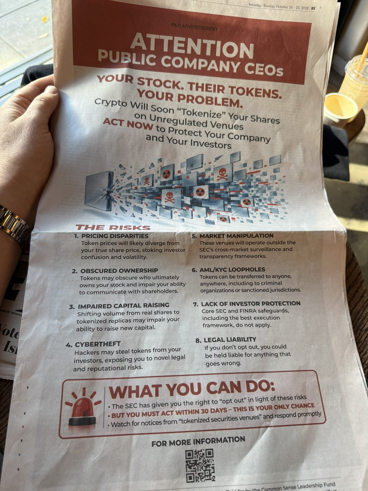
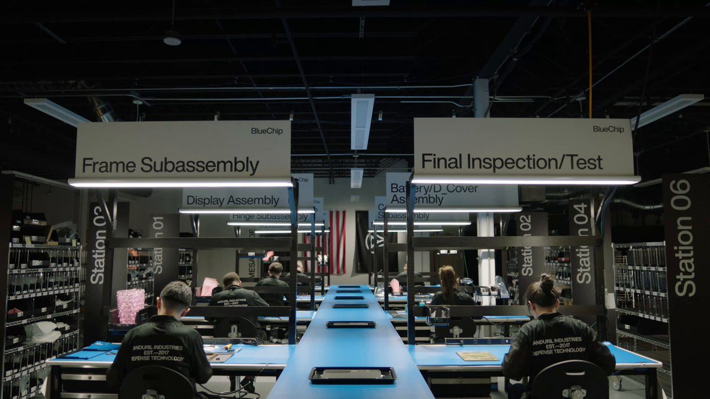

THE CEASEFIRE HAS COMMENCED
The ceasefire between Ukraine and Russia took effect at 4:00am Moscow time on October 27, 2026.
Timing was accelerated two days ahead of schedule to protect the safety of civilians and to facilitate the delivery of critical humanitarian aid. The ceasefire’s geographic area has expanded beyond Oleshky, within the Kherson Region, to provide safe passage for the humanitarian convoys.
General Valery Gerasimov, Joint Chief of the General Staff of the Russian Armed Forces has confirmed.
Trade finance keeps global commerce moving. Ripple and @C2FO are bringing it onto the @XRP Ledger.
Businesses can wait 30, 60 or 90 days to get paid. Even early payments can take days to arrive through bank settlement.
Together, we’re bringing financing and settlement supporting C2FO Instant Pay™ onto XRPL, using RLUSD for settlement to help suppliers receive funds in seconds.
That connects XRPL and RLUSD to an established working-capital marketplace, helping businesses access money sooner for payroll, inventory and new orders.
Trade finance is coming to the XRP Ledger!
Today, we’re expanding our collaboration with @BNYglobal across custody and tokenized trade finance, bringing BNY’s institutional scale together with $RLUSD, @XRP and the XRP Ledger.
→ https://ripple.com/ripple-press/ripple-expands-collaboration-with-bny-across-custody-and-tokenized-trade-finance/
Full page ad in WSJ against tokenized equities:

Ripple is officially going under the hood. 👀
We're expanding our partnership with @RobinhoodApp across $RLUSD, Ripple Prime and Ripple Treasury, bringing together stablecoins, prime brokerage and treasury management to support both customer-facing services and core financial operations.
Together, we're bridging traditional and digital.
UNDERCOVER: GAVIN NEWSOM SAYS THE DSA IS "GOING TO BE DOMINANT" AND "MAINSTREAM" IN THE DEMOCRATIC PARTY!
"The DSA, the energy and the desire and demand for bold change, not incremental change, is very much going to be dominant. I mean, that's going to be a mainstream Democratic movement. Absolutely. No question about that."
That's California Gov. Gavin Newsom, a likely 2028 presidential candidate, speaking to an undercover journalist while campaigning in New Hampshire.
Asked by a "younger voter" who said "we don't want Kamala Harris, we want more democratic socialist policies":
"No one is arguing to manage the status quo and fail more efficiently."
"You can't play in the margins anymore. The system's broken. It's completely unbalanced, and we can't manage the decline. We have to completely reimagine."
🚨Treasury Secretary Scott Bessent on President Obama mocking the Cheesecake Factory:
“This is the man who built the museum and it looks like Darth Vader’s tomb.”
Bessent also told @FoxBusiness' @FBNNicoleMac he frequents the Cheesecake Factory and always orders the French dip cheeseburger — and suggested the “Martha’s Vineyard set” should “give it a try.”
▶ Watch on XToday, @anduriltech and @qualcomm announced a new laptop that will eventually be 100% made in America, a “first step” toward creating a market for U.S.-manufactured components and total technological self-sufficiency.
Building computers in America should be a matter of “national pride,” says @PalmerLuckey.
@JonasYDu reports 👇
BlueChip. Built in America.
America made the first electronic computer to win a war.
Now we depend on our greatest adversaries to build the computers that run our economy and defend our nation.
Today, we bring it home.

▶ Watch on XAmerican glass. American metal. American silicon. American batteries. American workers. American everything.
BlueChip is the first American computer in decades. Don't let anyone lie to you and say it can't be done.
Designed in California. Built in America.
Sanctuary DAs are treating illegal aliens better than American citizens!
In New York City, prosecutors are being told to let criminal illegal aliens, including pedophiles, off lightly so that @ICEgov has a harder time deporting them.
Far too many times, innocent New Yorkers have been victimized by criminal illegal aliens and found their leaders taking the side of the criminals rather than the victims.
Under the Trump administration, the American people will ALWAYS come first and we will relentlessly remove illegal aliens from New York, even while local officials REFUSE to honor thousands of detainers.
Bronx and Queens DAs urge prosecutors to downgrade charges to keep illegal immigrants in US, House GOP report finds
Fake & Gay!
Moussa Diawara, the Malian national featured in this shockingly poorly researched @60Minutes report, now faces allegations of immigration FRAUD after his asylum application surfaced, revealing that he claimed to be a HOMOSEXUAL man who feared persecution in Mali.
Read more ⬇️
#BREAKING: DHS closes Biden-era loophole allowing Chinese birth tourism in Northern Mariana Islands.
THE CEASEFIRE HAS COMMENCED The ceasefire between Ukraine and Russia took effect at 4:00am Moscow time on October 27, 2026.
Timing was accelerated two days ahead of schedule to protect the safety of civilians and to facilitate the delivery of critical humanitarian aid. The ceasefire’s geographic area has expanded beyond Oleshky, within the Kherson Region, to provide safe passage for the humanitarian convoys.
General Valery Vasilyevich, Joint Chief of the General Staff of the Russian Armed Forces has confirmed.
BREAKING: Russia-Ukraine ceasefire expands across the Kherson region following mediation by Melania Trump & Pope Leo XIV, in what Ukraine calls the “largest de-escalation since 2022.”
BREAKING: Putin invites Zelenskyy to Moscow for direct peace talks, with the Kremlin promising “all necessary conditions will be ensured, including in terms of security.”
In total, Kimble caused over $365 million in fraudulent claims to Medicare, of which Medicare reimbursed over $199 million.
@FBIColumbia, @OIGatHHS and IRS Criminal Investigation investigated this @DOJFraudDiv case.
🔗 https://www.justice.gov/usao-sc/pr/fugitive-fraudster-herb-kimble-sentenced-20-years-international-healthcare-fraud-scheme
HUGE NEWS directly from @POTUS:
The Trump Administration is proud to announce a $250M+ initiative to RECRUIT and RETAIN nurses for nursing homes!
This federal and state initiative will support thousands and thousands of nurses and nursing students nation-wide — including those serving rural communities.
"Are you worried that the violence in Europe will escalate?"
@POTUS: "I don't worry about that at all. That's an immigration problem."
JUST IN: 🇸🇻🇭🇹 El Salvador deploys ~1,000 soldiers to Haiti.